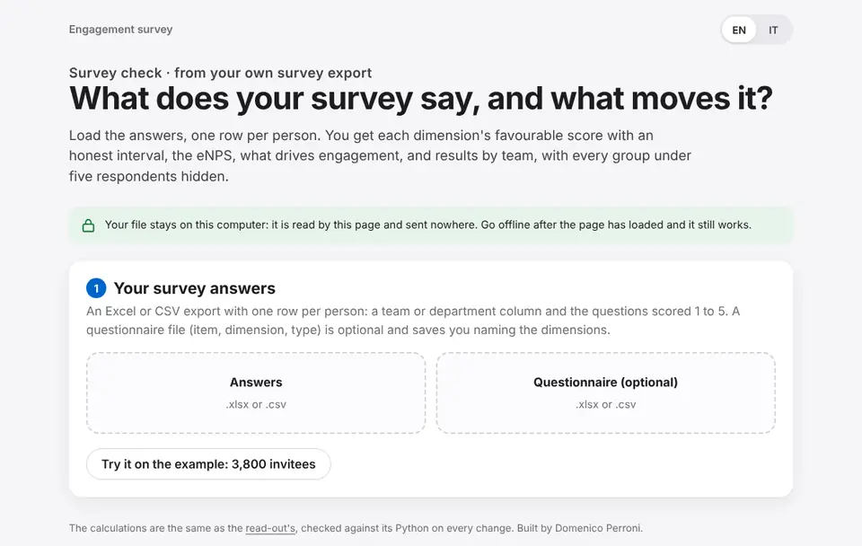

Case study · Domenico Perroni
All case studies · PDF · Italiano
People analytics
What does the survey say, and did acting on it work?
Client: A services group of 3,800 employees in 149 teams across four countries (synthetic), whose HR team runs a yearly engagement survey and acts on it.
What does the survey say, does it tell us who will leave, and did the action plan work?
16.8%resigned in a year in the lowest-scoring quarter of teams; 7.3% in the highest
+14.0points from the plan against its comparison group (+7.8 to +20.4)
+8.2the true effect, inside the interval; before-and-after said +15.2
40%of explained variance in engagement carried by Manager Support

What I did
- Scored each dimension with intervals that resample whole teams, and ranked the drivers with relative weights that hold up in a bootstrap.
- Set the confidential survey against resignations team by team, never person by person, with a Poisson model on team counts.
- Evaluated a manager-support plan piloted on half of the weakest teams against the other half, and checked the estimate against the true effect.
- Delivered a browser tool for the client's own survey, teams under five never shown, and a workbook reconciled with Python.
What it found
- Recognition, Career Growth and Manager Support go with fewer resignations and cannot be told apart; Pay & Benefits, the loudest theme in the comments, has the weakest link to who stays.
- Against its comparison group the plan is worth +14.0 points; the truth is +8.2. With 23 teams a side, the interval is the part to report.
- Building the tool's cross-check found a bug in the read-out: an eNPS of 0 was read as no answer.
With real data
- Resignations per team from the HRIS, aggregated before they meet the survey.
- A plan piloted on part of the eligible teams, so the next survey can tell the plan from chance.
How it is checked. Statistics written from scratch and tested against closed forms (Poisson rate ratios, relative weights); the tool agrees with Python on 3,111 values, the workbook on 223, and the read-out is identical on every Python version tested.
People analyticsSurvey statisticsProgramme evaluationPrivacy by designPython, no dependencies
Synthetic or public data; not legal, pay or investment advice. Figures as published on 24 November 2026. Domenico Perroni · HR advisory, people analytics, reward · Kraków · d0m3n1c0x.github.io